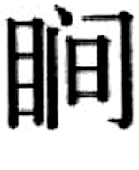
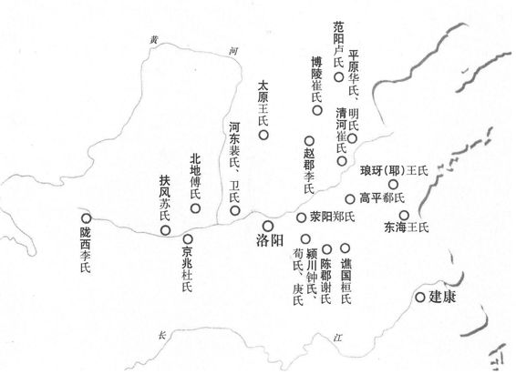
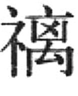
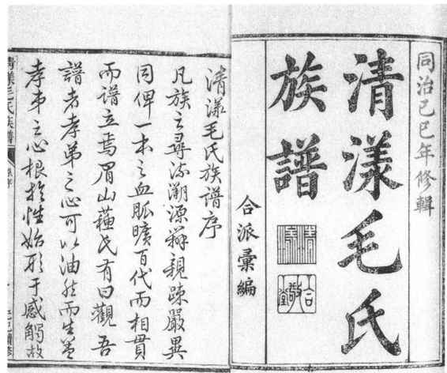
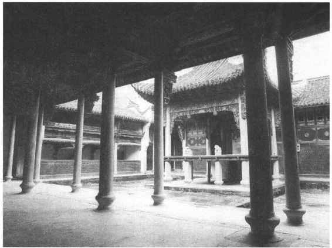
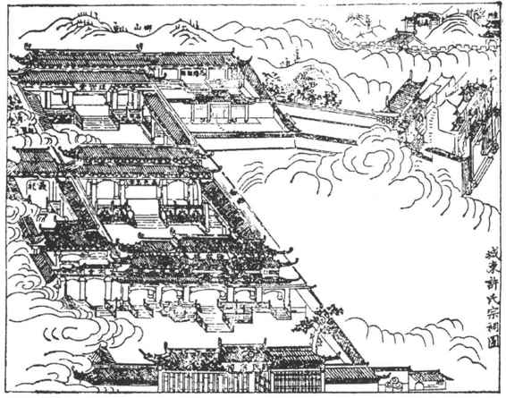
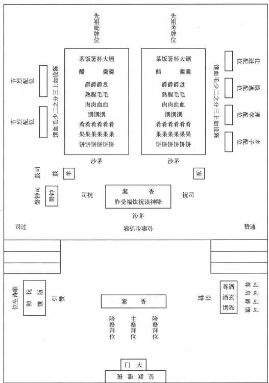

受生产力发展和激烈的社会变革的影响，西周春秋时期的那种典型的宗法制度到战国以后已难以维持其先前的形态了。事实上，平王东迁以后，作为天下大宗的周天子只是徒拥虚名，在春秋后期，各诸侯国内大夫专国政、陪臣执国命的情况更是屡见不鲜，原来的宗法等级已经开始动摇。到了战国时期，各国为了图强争霸，纷纷进行变法。扩张君权，加强封建国家的中央集权，是变法的重要内容。林立于国内并与各级政权紧密结合的贵族宗族集团，是推行中央集权政策的障碍，所以各国变法在不同程度上都企图限制、削弱贵族宗族势力，最终都趋向于废除分封制度，用新的官僚制度来代替旧的世卿世禄制度。由于官无世禄，独重长適的宗子制也就被多子均分的继承制所代替了。变法最彻底的秦国还用法律形式禁止父子兄弟同家共财，并编定户籍，使一户户的小家庭直接隶属于国家。所以后人说：“自世爵世禄之制废，而宗法始坏矣。”［14］“封建废，而宗法格不行。”［15］“及秦用商君之法，富民有子则分居，贫民有子则出赘，由是其流及上，虽王公大人亦莫知敬宗之道。”［16］
另一方面，宗族内部许多不同家庭间的利益冲突和同居生活中必然产生的种种矛盾，也逐渐涣散了基于血缘关系的凝聚力，一些本来居于支庶地位的成员由于服官、军功、力田、经商等原因，而上升为显贵或富豪，他们不再愿意受宗族同居共财的约束，也不再愿继续尊奉并受制于名义上的宗子。
在国家政权的限制、压迫和内部离心力的双重冲击之下，特别强调嫡长子的承传系统，区分大宗、小宗，以维系大宗百世不迁的宗族制度逐渐瓦解，而宗族和各级政权的分离也不可避免地完成了。
秦汉以后，就社会上一般情况而言，大宗、小宗之分实际上已经不受重视，宗子之尊成了历史陈迹，封建大一统帝国的官僚行政系统也不容宗族组织插足各级政权，从这一意义上说，严整的宗法体系已不复存在。所谓“宗法始坏矣”，“宗法格不行”，就是根据这种情况断言的。但是，如果从广泛的意义上来理解，把宗法制度看做是一种以血缘关系为纽带，在各个家族内部体现尊卑有序，维护尊长特权，约束族人思想行为，以巩固统治秩序的规范和办法，那么可以说，它在整个封建社会中始终顽强地表现着自己，久盛不衰。封建社会的家族制度仍然深深地打有宗法的烙印。
在封建社会自然经济的条件下，聚族而居是一种普遍现象。秦汉时期一些宗族由于政治地位、经济力量以及人丁兴旺等方面的优势而成为强宗大族。强宗大族在地方上盘根错节，不仅武断乡曲，甚至阻梗政令的实施。例如汉景帝时，“济南氏宗人三百余家，豪猾，二千石莫能制”［17］。汉武帝时，灌夫“家累数千万，食客日数十百人，陂池田园，宗族宾客为权利，横于颍川。颍川儿乃歌之曰：‘颍水清，灌氏宁；颍水浊，灌氏族’”［18］。为了压制强宗大族，秦始皇和汉高祖在统一中国后都强迫六国强宗、天下豪富迁离本土，汉武帝也曾下令“徙强宗大姓，不得族居”［19］。汉代州刺史监察“六条”，第一条就是“强宗豪右，田宅逾制，以强凌弱，以众暴寡”［20］。朝廷有时甚至有意任用酷吏，罗织株连，予以翦除。这些措施曾经取得了一些效果。但从西汉后期开始，特别是在东汉时期，由于大地主庄园经济的发展和中央政权控制力的削弱，强宗大族的势力又迅速发展起来。它们筑堡坞，置部曲，把持地方，操纵官吏，在战乱之时更建立宗党武装，形成割据势力，最后终于使统一的帝国解体。汉末的大量史料都说明了强宗大族势力的活跃，如《后汉书·荀彧传》提到韩融有“宗亲千余家”，《三国志·魏书·李典传》说李典的“部曲宗族”多达一万三千余口，他们都有举兵自保的实力。当时的东南地区，也是“名宗大族，皆有部曲，阻兵仗势，足以建命”［21］。这种强宗大族的势力进一步发展，就形成了魏晋南北朝时期的门阀制度。
正如一些研究者所指出的那样，“所谓门阀制度乃是以家族为基础的地方性的组织。这种制度不仅标志着统治阶级与被统治阶级的区别，而且标志着统治阶级中部分家族与其他家族的区别；换一句话说就是封建社会中等级制在家族中的深刻表现及其制度化”［22］。门阀是门第阀阅的意思，指世代显贵的家族。门第的观念东汉时已经出现，大官僚和名士的家族宗党往往官宦不绝，如弘农华阴杨氏四世四人官至三公，汝南汝阳袁氏四世五人官至三公，汝南平舆许氏三世三人位至三公，皆为世所羡，成为高门望族。高门望族的子孙即便迁徙外地，习惯上仍举原籍的郡名作为标识，后世称之为郡望。一姓常常不止一望，举郡望成为区别宗支的一种方法。（图3—6）高门望族与强宗大族是二位一体的，门第高，族望隆，正是强宗大族的标志。它们在社会上的势力和声望累代延续，各以门阀自诩，而且互相标榜，组合为一种具有特殊身份、享有特殊权利的集团，在魏晋南北朝时被称为“大姓”、“著姓”、“右姓”、“高门”、“冠族”、“士族”、“世族”、“势族”等等。与此相对，门第较低，家世不显的家族则被称为“单家”、“寒家”、“寒门”、“庶族”，它们即使也拥有一定的土地和财产，其成员也有入仕的机会，但总的说来，在政治生活中受到压抑，社会地位无法同门阀士族相比。当时用以铨选官吏的九品中正制正是随着门阀制度而产生的。这种选举制度形式上是由各地中正官采纳乡里舆论，根据家世才德，把人才分为九个等级，进行推选，也就是以九品官人。但是，以家族为基础而盘踞于地方的门阀士族，很快就完全垄断了选举权，结果只论家世，出身于名门望族的“衣冠子弟”，即便无德无才，总是被列为上品，优先入仕，得受清贵之职，而出身孤寒的庶族子弟，即便才德超群，也总是被列为下品，如能入仕，也只可就任士族不屑为的卑浊之职，以致“上品无寒门，下品无世族”［23］，“世胄蹑高位，英俊沉下僚”［24］，“据上品者，非公侯之子孙，即当途之昆弟”［25］。这样，九品中正制反过来又巩固并发展了门阀制度。门阀士族不仅各自在本乡本土控制权力，其联合势力又能左右朝政，皇室不得不与它们“共天下”。国家法令明文规定士族有荫族、免役等特权。士庶之间有严格的区别，“士庶之间，实自天隔”，“士庶之别，国之章也”。士族自视甚高，不与庶族通婚姻。如果士族中人与庶族结为姻亲，或者就任一般由庶族中人出仕的卑浊之职，当时称为“婚宦失类”，是十分耻辱的事，会因此而受到排挤。

图3-6 中原大族郡望分布图
在士族集团中，不同的宗族也高下不一。唐代柳芳的《姓系论》讲到在南北朝时，“过江则为‘侨姓’，王、谢、袁、萧为大；东南则为‘吴姓’，朱、张、顾、陆为大；山东则为‘郡姓’，王、崔、卢、李、郑为大；关中亦号‘郡姓’，韦、裴、柳、薛、杨、杜首之；代北则为‘虏姓’，元、长孙、宇文、于、陆、源、窦首之”。“侨姓”、“吴姓”、“郡姓”、“虏姓”，合称“四姓”，“举秀才，州主簿、郡功曹，非‘四姓’不在选”。所谓“郡姓”，完全是“以中国士人差第阀阅为之制，凡三世有三公者曰‘膏粱’，有令、仆者曰‘华腴’，尚书、领、护而上者为‘甲姓’，九卿若方伯者为‘乙姓’，散骑常侍、太中大夫者为‘丙姓’，吏部正员郎为‘丁姓’”。别贵姓，分士庶，习俗既久，被视为理所当然，“不可易也”。
门阀制度不仅在不同的宗族之间区别高低贵贱，在各个高门士族内部，同样也有尊卑上下之分。门阀士族族大宗强，往往拥有众多的宗族成员，分别属于许多支派和家庭。族内官职最高，财富最多的显贵人物成为首领，他们凭借财富和权势控制宗族，对于宗族成员来说，处于父家长的地位。此外，门阀士族的首领又通过招诱、逼迫等手段收纳门生，庇护逃亡者，并把许多农民当做自己的“荫户”、“附户”、“宾客”、“部曲”，对他们具有号令不二的权力，平时榨取他们的劳动力，战乱时又把他们同宗族子弟一起编为家兵，体现了十分严重的人身控制和人身依附关系。宗族中不同支派，不同家庭之间，也因本身财富的多寡，代表人物官职的高低而地位不同，“一姓之中，高下悬隔”。《晋书·阮咸传》说阮籍、阮咸叔侄“居道南，诸阮居道北，北阮富而南阮贫”。南朝王氏是第一等的高门大姓，但“王氏以分枝居乌衣者，位官微减”，声望不如其他分枝。［26］博陵崔氏是著名的山东士族，而其中被称为“东崔”的一系却“地望寒劣”（《魏书·高阳王雍传》）。
与讲究门第、族望的门阀制度相联系，魏晋南北朝时谱牒之学十分流行，出现了大量姓氏书和家传、家谱。晋贾弼所撰《姓氏簿状》，“十八州，百十六郡，合七百一十二篇，甄析士庶无所遗”［27］，其孙希镜又撰《姓氏要状》、曾孙执又撰《姓氏英贤》，以为家学。刘宋的王弘、刘湛、王俭、王僧孺等也都是姓氏族谱的专家。刘孝标注《世说新语》，所引家谱、家传多达数十种。郑樵《通志·氏族略·氏族序》说：“隋唐而上，官有簿状，家有谱系。官之选举必由于簿状，家之婚姻必由于谱系。历代并有图谱局，置郎令史以掌之，仍用博通古今之儒，知撰谱事。凡百官族姓之有家状者则上之，官为考定详实，藏于秘阁，副在左户。若私书有滥，则纠正之以官籍，官籍不及，则稽之以私书。此近古之制，以绳天下，使贵有常尊，贱有等威者也。”可见谱牒用以明统系，明统系则宗族不淆，“系之地望而不惑，质之姓氏而无疑，缀之婚姻而有别”［28］，谱学的兴盛正是适应了门阀制度的需要。
由强宗大族发展而来的门阀制度，与西周春秋时期典型的宗法制度相比，其宗族内部的层次系统不是因大宗小宗血缘的远近而作明晰的区分，而更偏重于各个支系、各个家庭的政治权势和财富，宗族中官位最高、财富最多的成员成为实际上的首领，他们取代了宗子的地位，而对宗族的控制则具有更为粗暴的形态。但其重视血统和家世，以血统家世决定社会地位，并在宗族内部实行家长制控制，区别尊卑贵贱，强调等级服从，二者完全是一致的。
南北朝时期的世家大族在隋末农民战争中受到沉重的打击，隋唐以科举取士，废除了九品中正制，使许多庶族出身的士子有了更多的仕宦机会，门阀制度渐次没落，但崇尚门第的风气在唐代社会仍在延续。唐代一些旧的士族世家虽然已经衰落，长期无人成为显宦，但社会声望很高，受人仰慕。他们之间互为婚姻，以礼法家教自鸣清高。唐高宗时宰相李义府为子向山东士族求婚不遂，怂恿朝廷下诏，禁止最著名的士族陇西李氏、太原王氏、荥阳郑氏、范阳卢氏、清河崔氏、博陵崔氏、赵郡李氏等七姓十族自为婚姻。此前唐太宗为了抬高当朝达官贵人，而深恶“山东士人好自矜夸，以婚姻相尚”，对官修《氏族志》以清河崔民干为第一等大为不满，下令重修，把崔民干抑为第三等，指出：“山东崔、卢、李、郑四姓，虽累叶陵迟，犹恃其旧地，好自矜大，称为士大夫。每嫁女他族，必广索聘财，以多为贵，论数定约，同于市贾。甚损风俗，有紊礼经，既轻重失宜，理应改革。”并一再表示：“至今犹以崔、卢、王、谢为重……见居三品以上，欲共衰代旧门为亲，纵多输钱帛，犹被偃仰”，“问名姓在于窃赀，结必归于富室，乃有新官之辈，丰财之家，慕其祖宗，竟结婚媾，多纳货贿有如贩鬻”，“我不解人间何为重之”。［29］但经此压抑，山东士族旧家自称“禁婚家”，反而声价更高。后来唐文宗为之大发感慨：“民间修婚姻，不计官品而上阀阅，我家二百年天子，顾不及崔、卢耶！”［30］唐代姓氏书和谱牒之学也很流行，《新唐书》专门设置《宰相世系表》，详列曾经出过宰相的名族的先世后裔、世次房属、仕宦情况，正是反映了唐代社会仍然重视家世郡望的风气，这可以说是门阀制度的余波回响。
本来一姓常常不仅只有一个郡望，如唐代张氏有43望，王氏有32望，由于旧家著望才得到社会上的尊重，于是假托祖先、攀附大族、冒认名宗，任意通谱、合谱的现象也就随之而起，于是王姓惟号太原，张氏只称清河，以致同姓即认同宗，谱系逐渐混乱，在政治上、经济上早已衰落的旧家世族难以继续用血统来自别于他族，维持自己的特殊身份，由于历史因循力量而一时得以保留的社会地位也就慢慢丧失了。随着庶族地主的进一步兴起，又经过唐末五代战乱的荡涤，与重族望为特征的门阀制度密切结合的中古宗族制度同士族地主一起退出了历史舞台。
宋代以后，我国的封建社会进入了后期，租佃契约制的地主经济迅猛发展。与荫户门客对门阀地主不同，在租佃契约制下，农民对地主的人身依附相对来说较弱，同时由于商品经济也有了一定程度的发展，土地买卖盛行，土地所有权的转移也颇为迅速。地主阶级内部分化剧烈，“取士不问家世，婚姻不问阀阅”［31］，累世高官的具有特殊身份的旧士族失去了社会影响，而地主阶级中的寒士也能依靠科第入仕取得富贵，成为新的官僚地主。但多子平均继承制又使他们聚敛而来的土地、财富在一、二代后就迅速分散。北宋理学家张载就曾指出：“且如公卿一日崛起于贫贱之中，以至公相，宗法不立，既死遂族散，其家不传。……今骤得富贵者，止能为三四十年之计，造宅一区，及其所有，既死则众子分裂，未几荡尽，则家遂不存。如此则家且不能保，又安能保国家？”［32］另一方面，地主阶级和农民阶级的阶级矛盾也进一步尖锐，农民的反抗斗争此起彼伏，北宋初年王小波、李顺领导的起义农民响亮地提出了“等富贵，均贫贱”的口号。为了维护本家族、本阶级政治上、经济上的优势，用血缘关系来掩饰同农民的对立，一些地主阶级的代表人物把上古时期的宗法制度理想化，认为门阀制度下的宗族组织已失去圣人立宗法的本意，主张重建古代的宗族组织，以稳定封建统治秩序。张载说：“管摄天下人心，收宗族、厚风俗，使人不忘本，须是明谱系世族与立宗子法。宗法不立，则人不知统系来处。”［33］并把宗法的概念扩大到国家政权：“大君者，吾父母宗子；其大臣，宗子之家相也。”［34］由于历史条件久已改变，要原封不动地恢复西周春秋时那种典型的宗法制度是不可能的，但上古宗法尊祖、敬宗、收族的原则在经过一定的调整之后，得到了实际的贯彻，从而形成了以修宗谱、建宗祠、置族田、立族长、订族规为特征的体现封建族权的宗族制度，这种宗族制度完全适应封建统治的需要，不断得到发展和完善，在封建社会后期近千年的历史时期中同封建政权、封建礼教纠合在一起，起着长期而深刻的影响。
宗族是以血缘为纽带组成的，谱牒用以明统系，统系既明，宗族就不至于混淆。如前所述，谱牒之学在魏晋南北朝曾十分流行，出现过许许多多姓氏书和家传、家谱，但重族望、讲门第的风气又造成了夸饰攀附、真伪不辨等弊端，如清代学者章学诚所言：“其不肖者流，或谬托贤哲，或私鬻宗谱，以伪乱真悠谬恍惚，不可胜言。其清门华胄，则门阀相矜，私立名字。……以至李必陇西，刘必沛国，但求资望，不问从来。则有谱之弊，不如无谱。”［35］唐以前的谱牒在唐末五代的战乱中绝大多数散失不存，旧的谱学由衰而绝。宋代以后，经欧阳修作欧氏谱，苏洵、苏轼父子作苏氏谱为之倡导，家谱重新受到地主阶级的重视。南宋理学家朱熹在为本族族谱所作的序中说：“谱存而宗可考，是故君子重之。”与着重区分门第高下的旧谱学不同，新谱学以宗法为“谱心”，主要体现敬宗收族的精神，所谓“唐人未尝究心谱学耳，惟宋儒重宗法而谱学娴”［36］，就是指此而言。发展到明清，不但著族皆有谱，“家之有庙，族之有谱”［37］成了极其普遍的现象。在聚族而居的农村社会，甚至可以说没有无谱之族，除少数从事所谓“贱业”者以外，也可以说几乎没有不入谱之人。（图3—7）清代学者程瑶田对宗谱的作用及其与宗法的关系，有一段透辟的论述：“族谱之作也，上治祖祢，下治子孙，旁治昆弟，使散无友纪不能立宗法以统之者，而皆笔之于书。然后一披册焉，不啻伯父伯兄、仲叔季弟、幼子童孙群居和壹于一堂之上也。夫所谓大宗收族者，盖同姓从宗合族属，合之宗子之家序昭穆也。今乃序其昭穆，合而载之族谱中。吾故曰：族谱之作，与宗法相为表里者也。”［38］

图3-7 浙江江山市档案馆藏《清漾毛氏族谱》
宋以后的宗谱又有家谱、族谱、世谱、家乘等不同名称。有些较大的宗族族内又分若干支若干房，另有支谱、房谱。清代学者钱大昕说得很明白：“五季谱牒散亡，而宗谱遂为私家撰述，于是有合族之牒、有分支之谱。”［39］明清时比较完备的宗谱一般由以下几部分组成：序文，谱例，目录，家训族规，族墓、祠堂、族田的情况，自始迁祖以下全族已故和现存的所有成员的谱系世表。有的家谱还载有祖先的画像，诰敕、传记、墓志和著作。家谱的序文可以有许多篇，而且每次续修都增加新的序文。这些序文往往出自本族辈次名望较高的成员之手，也有请非本族的地方官长或著名学者撰写的，主要叙明修谱的意义、缘起、本族得姓占籍的由来、繁衍的情况以及修牒的经过等等。谱例相当于一书的凡例，主要说明修谱的体例，规定入谱的资格，往往特别强调要防止异姓乱宗。家训族规或是祖先遗命、或是所谓合族公议而定，在宗谱中置于显著的地位。族墓、族田的面积和方位四至，祖先兆域的排列情形，祠堂的位置结构等，都有详明的记载，而且多有附图以言的，一目了然。
家谱中最主要的部分是谱系名录。“谱者，普也，普载祖宗远近姓名讳字年号。”［40］先分房支，然后以表格形式登载各房支下每一世次男性宗族人员的名、字、号，功名仕宦情况，婚姻、生育情况和享年、葬地。入谱的人，“讳某字，娶某妇，生几子，葬某处，寿若干，咸备载于后，庶几可示后昆”［41］。女性在家谱中也有记载，但都不见名字，外族之女嫁来后就加入了丈夫的宗族，但她只能以“某氏”的名义附见于丈夫之后，有时注明原是某地某人之女；本族之女嫁出后就脱离了父亲的宗族，她只能以“第几女”的名义附见于父亲之后，并注明适某地某人。这也是实际生活中妇女附属地位的反映。能立家传的，都是本族引以为荣的名宦、名士、忠臣、孝子、烈妇、贞女等。日本学者秋贺多五郎在《宗谱的研究》一书中曾把家谱的内容和修谱的目的归纳为：①序得姓的根源，②示族数的远近，③明爵禄之高卑，④序官阶之大小，⑤标坟墓之所在，⑥迁妻妾之外氏，⑦载适女之出处，⑧彰忠孝之进士，⑨扬道德之遁逸，⑩表节义之乡闾十条。不难看出，“谱系之作，所以敦孝弟、重人伦、睦宗族、厚风俗”［42］，具有敬宗收族的意义。
家谱或10年一修，或20年一修，或30年一修，长期不续修家谱，会被认为“不孝”。修家谱是宗族中的一件大事，由族中的头面人物主持，如嘉善陈氏规定修谱之事“有爵者主之，爵同论长”［43］。修谱的费用或由族中财力雄厚者承担，或向族众摊派。有的宗族平时置有添丁簿，随时登录族中人口变化的情况，用备查考，为修谱预作准备。家谱每次续修完毕，都在祠堂中举行仪式向祖先禀告，然后分发各房各支，有的一直分发到各个家庭。明代休宁范氏把家谱一一编号，只印刷一定的数量，随即毁去书版，还要求族众对家谱必须“收藏贵密，保守贵久，每岁春正三日祭祖时，各带所编发字号原本到统宗祠，会看一遍。祭毕，各带回收藏。如有鼠侵油污、磨坏字迹者，罚银一两入祠，另择本房贤能子孙收管”［44］。明王士晋《宗规》也有类似的规定。这样做一方面是为了加强家族的内聚力，进行宗法教育，另一方面也为了杜绝日后发生冒宗之事。
宗祠习惯上多被称为祠堂，是供奉祖先神主，进行祭祀活动的场所，被视为宗族的象征。崇拜祖先并立庙祭祀的现象，在原始社会后期即已存在。后世天子、诸侯的祖庙为宗庙，士大夫的祖庙为家庙。夏商二代都已有了宗庙，周代以后规定天子七庙、诸侯五庙、大夫三庙、士一庙、而庶人只能祭于寝。就是说一般平民只能在自己的居室中祭祀祖先，士大夫以上才能立祠庙。南宋朱熹著《家礼》，提出“君子将营宫室，先立祠堂于正寝之东，为四龛，以奉先世神主”。四龛所奉为高祖父、曾祖父、祖父、父亲四代。当时的祠堂似是以家庭而不是以宗族的名义建立的，而且与居室相连，还不是单独的建筑。到了元代，以宗族为单位建立的宗祠已经出现，宁海童氏聚族而居，就“相与作祠堂以奉其先祖”［45］。明初以来，“爱宗敬长之道达诸天下，其能以宗法训其家人立庙以祀者……往往皆有”［46］，“庶人无庙”的规矩被打破了。明世宗采纳大学士夏言的建议，正式允许民间皆得联宗立庙，从此宗祠遍立，祠宇建筑到处可见。合族共祀者为宗祠，宗祠一般规模较大。又有所谓统宗祠，又称大宗祠，是数县范围内同一远祖所传族人合建的，如广东嘉应，“俗重宗支，凡大小姓莫不有祠。……州城则有大宗祠，则并一州数县之族而合建者”［47］。江西新安皇呈徐氏统宗祠，下统38族，远族有距祠300里者。宗祠之下又有支祠、房祠、家祠，支祠、房祠为族中各支派所建，用于供奉本支、本房的祖先，家祠则是一家或兄弟数家所建，只供奉两、三代直系祖先。清代休宁茗洲吴氏除合族宗祠外，又分五支，每支立有分祠，支下分房，又各有祠。有的宗族在祖先墓地还另设墓祠。这样，“于宗有合族之祠，于家有合户之祠，有书院之祠，有墓下之祠。前人报本之义，至矣尽矣”［48］。
宗祠为追远报本而建，所以在建筑规制上要体现出礼尊而貌严。（图3—8）自南宋到明初，一般的祠堂都是家祠，多根据朱熹《家礼》所定之制，并参考唐宋三品以上官家庙的形制，建堂立龛，供奉高、曾、祖、考四代神主，龛下设附位，安放旁系神主，另于东侧建屋贮藏祖先衣物遗书和各种祭器。明代中期以后，宗祠大兴，一些官僚豪绅、富商巨贾所在之族，依靠其政治地位和经济力量，所建宗祠气派宏伟，富丽堂皇，以大门、享堂（厅事）、寝堂（龛堂）为中轴线，又有许多附属建筑。云阳涂氏的宗祠“上建龛堂，所以安神主而序昭穆也；中树厅事，所以齐子孙而肃跪拜也；前列回楼，所以接宾朋而讲圣旨也；左右两庑，所以进子弟而习诗书也”，是具有代表性的大型宗祠建筑。歙县棠樾鲍氏宗祠建于村口，祠前石路上高耸七座明清两代由皇帝颁赐匾额的石牌坊，又有一方亭，十分壮观。乾隆年间官僚许登瀛捐资八千两白银，重建歙县城东许氏宗祠中诰敕楼和拜堂各五大间，拜堂可容千人跪拜，其规制之大，在当时也并不多见。（图3—9）一些大族巨室不惜耗费巨大的财力来营建宗祠，有“炫耀乡邻，以示贵异”［49］的作用在内。

图3-8 浙江诸暨边氏祠堂内景

图3-9 歙县城东许氏宗祠图（选自《重修古歙东门许氏宗谱》）
宗祠祭祖，仪式隆重，是最为重要的宗族活动。祭祀活动名目繁多，有每年对高、曾、祖、考的春、夏、秋、冬四时祭，有冬至祭始祖、立春祭先祖、秋分祭祢以及忌日祭等特祭，每逢年节还有年节祭。平时族人经过宗祠门口，都要下车下马，毕恭毕敬。祭祀时，合族男子会集宗祠，拈香行礼，更是极其严肃。每次祭祀，都由族长或宗子主祭，并以年辈、官爵较高者为陪祭，另外安排通赞、引赞、司祝、司尊、司帛、司爵、司馔、司盥等执事人员负责赞礼和奉献各种祭品，有时还配有钟鼓和歌诗生。（图3—10）其余族人则依辈次的先后和身份的尊卑，井然有序地随主祭、陪祭之后，在赞礼声中跪拜如仪。参加祭祀的人一定要衣冠端正，行礼时“尊者在前，卑者在后，务整齐严肃，如祖考临之在上，不可戏谑谈笑，参差不齐”［50］，凡“行礼不恭，离席自便，与夫跛倚、欠伸、哕噫、嚏咳、一切失容之事”，都要议罚。［51］祭毕会食，依次饮福、享胙。饮福为饮用祭酒，享胙为食用祭肉。祖先用过的祭品，吃了会沾有祖先的福泽，而“革胙”、“停胙”则是对犯有过失的族人的一种处分。宗祠祭祖目的在于通过追思共同祖先的“木本水源”之恩，用血缘上的联系团结族人，以免日久年长，一族之人名不相闻，面不相识，视同路人。而繁缛隆重的仪式又充分体现了封建伦理，展示了礼教规范，也是一种教化的手段。

图3-10 立春祭先祖图（据清吴翟《茗洲吴氏家典》）
除了作为祭祀场所之外，宗祠又是处理宗族事务，执行族规家法的地方。竹溪沈氏的《祠规》声称“凡有族中公务，族长传集子姓于家庙，务期公正和平商酌妥协”。族人的冠礼、婚礼、丧礼也有在祠堂进行的。族产多以祠堂的名义进行管理。有的宗族还有定期到祠堂看谱、读谱的规约。对族人施行族规家法，必在祠堂进行。南海霍氏即在每月朔望族众会集祠堂之时，对有过子侄执行家法。竹溪沈氏《祠规》规定对犯有严重过失的族人，“族长传单通知合族，会集家庙，告于祖宗”，然后行罚。有的宗族规定族人之间或族人家庭之中发生了争执，都要到祠堂中裁决。对奴婢佃户的惩罚也经常在祠堂中决定并执行。祠堂在一定意义上又成了衙门，具有一族“公堂”的性质。
宗祠还是教育本族子弟的处所。在祠堂进行的祭祀、会食、团拜、读谱、对犯过族人进行惩罚等活动，都有宣扬封建伦理道德的教化作用。不仅如此，许多宗族都在祠堂中设有家学，学中塾师由族中“品学兼优”的士人担任，办学经费由族产收入开支，“凡族中子弟入学，不另具修金供膳等费，外姓不得与入”［52］，所以又称义学。
宗祠或由族长直接管理，或由族中威望较高的人轮流在族长的领导之下担任管事。也有的宗族设有宗祠总理、宗祠知事，表面上由族人公推，实际上仍被族中有势力的人把持。经管宗祠的人又往往同时经管族产。许多宗祠都起有堂名，堂名被认作是该宗族的代称。
族产又称祠产，名义上是合族公有的财产，包括山林、土地、房屋等。除祖先所置并有遗嘱规定不许分散、归子孙共享的那一部分财产以外，族产的来源主要有三：“或独出于子孙之仕官者，或独出于子孙之殷富者，或祠下子孙伙议公出者。”［53］此外还有把犯了过失的族人财产罚入者。族产中最重要的是可以年年有地租收入的族田。族田又分祭田、义田、学田等，一般都招佃耕种，祭田的地租供祭祀用，义田的地租供赒济贫困族人用，学田的地租供宗祠办学用，但三者的区别并不十分严格。最早设置族田的是北宋的范仲淹，他在平江（今江苏苏州市）购田千余亩以赡族，使族人贫乏者“日有食，岁有衣，婚娶凶葬皆有赡”［54］。朱熹制定《家礼》，则规定“初立祠堂，则计见田亩，每龛取二十之一，以为祭田。宗子主之，以给祭用。如上世未置田，则合墓下子孙之田，计数而割之，皆立约闻官，不得典卖”。元明以后族田普遍设置，明初方孝孺在《宗仪·睦族》中说：“睦族之法，祠祭之余复置田，多者数百亩，寡者百余亩。”实际上有些大族的族田有以千亩计者。由于族田可以缓解贫民的反抗斗争，有利于封建统治，所以封建朝廷把购置族田当做“义举”而大力提倡，对捐资较多的人予以旌表。有些大官富商，也表现得颇为慷慨，如清长洲陆豫斋，一次“割遗产五百亩，为赡族之资”［55］，歙县鲍启运，先后捐资购置族田一千二百余亩，［56］歙县黄履昊也曾“捐银计一万六百两，置田八百八十余亩”，以“恤族姓之孤贫”［57］，庐江章氏更“捐田三千亩赡族”［58］。竹溪沈氏则明文规定族人凡得秀才以上功名及出仕者都要报捐从1两到50两不等的续置祭产之资，现任官要捐银添置义田：“凡现任四品以上者，岁捐百五十金，七品以上者百金，佐贰减半……有力者听便。”［59］
族田是合族公产，各宗族都立约规定不得典卖，“如或有将祭田私卖者，合族控官告祖，人则不许入祠，名则不列宗谱”［60］。清政府也订有“子孙盗祭田五十亩以上者，发边远充军”等法律条文，用以保证族田的长期维持。为了避免族人侵吞族田，范仲淹在《义庄规矩》中强调“族人不得租佃义田，诈立名字者同”。后世各宗族都规定族田只能佃于外族，本族之人不但不能承佃，而且不能担任租佃的居间人，以防产生弊端。族田的收入除祭祖、办学、办理一些公益事业外，主要用于赡族。范仲淹所定《义庄规矩》有“每人每月可支米三升，冬可置绢一匹，娶妇支二十贯钱，嫁女支三十贯钱”的规约，似是族众不论贫富，人人都可得到一份。明清族田的“赡族”，则是指救济族中贫困者，“其婚嫁之失时也，则有财以助之；其寒也，则为之衣；其疾也，则为之药；其死也，则为之殓与埋”［61］。“有贫困残疾者论其家口给谷，无力婚嫁丧葬者亦量给焉。遇大荒，则又计丁发粟，可谓敦宗族矣。”［62］“节妇孤儿与出嫁守志，以及贫乏无依者，生有月粮，寒有冬衣，死有棺衾，葬有义冢，嫁有赠，娶有助，莫不一均沾其惠。”［63］对违反封建礼教，有不规行为者，即使陷于赤贫状态，也不予赡恤，如歙县棠樾鲍氏的义田条例就载明聚赌酗酒者，妇人打街骂巷不守规法者，干犯长上、行止不端者都要“停给”，必待改过以后才重新考虑给予周济。族田的赡族功能在一定程度上掩饰了宗族内部的阶级对立，加强了族人对宗族的依赖性，从而诱使他们依附于宗族中的权贵人物。族田和宗祠结合在一起，二者互相补充，“敬宗收族”的原则得到了充分的体现。正像有人指出的那样：“祠堂者，敬宗者也；义田者，收族者也。祖宗之神依于主，主则依于祠堂，无祠则无以妥亡者。子姓之生依于食，食则给予田，无田则无以保生者。故祠堂与义田并重而不可偏废者也。”［64］反过来，也可以说“凡宗族离散，皆由不设义田、宗祠之故”［65］。
族田一般由族长统率下的专人管理，须濡崔氏规定管族田者“必择族中殷实练达之人方可”，庐江章氏则“由族中有科名者掌之”。其实际权力，都操纵在官僚地主手中。虽然族规和法律要求他们秉公处事，但“假公济私，托收管之柄，肆侵蚀之谋”［66］，这类事屡见不鲜。由于管理族田有巨大经济利益，宗族内部为争夺管理权而内讧的现象也经常发生。久而久之，在有的宗族中，不得典卖族田的族规成了一纸空文，族田多被势豪侵渔兼并，而这种势豪又往往为本族的成员。这也是封建社会末世必然出现的社会现象。
族长是管理全族事务的一族最高首领。族长和宗子是不同的概念。一个宗族宗子的身份是以其大宗世嫡的血统继承而来的，而族长并非世袭，一般由推举产生。虽然宋儒一再呼吁要“立宗子法”，明儒如许相卿等也宣扬“大宗子有君道，合宗亲疏长幼皆宜依向推崇，匡导卫翊，吉凶必咨，宴会必先”，以见“强干弱枝之义”，［67］但宗子的威权久已不复存在。明清法律规定，妻、妾、婢所生子都有平等的继承权，实际上“一族之人，或父贵而子贱，或祖贱而孙贵，或嫡贱而庶贵……即一家之中，有父富而子贫，兄贫而弟富，嫡贫而庶富”［68］，正嫡所传既然不一定能保持富贵并具有收族的能力，也就难以得到族众的宗奉。正因为如此，封建社会后期绝大多数宗族都已不知有所谓宗子，而设族长统理族务。少数宗族即使立有宗子，但同时也有族长，宗子只是本族名义上的代表，族中真正的权力仍操纵在族长手里。
族长或称族正，虽然在形式上是推举产生的，但并不是宗族成员人人都有推举或被推举的权利。能推举族长的只是族中的长老和或富或贵者，年轻人和贫穷的劳动人民都无从表示自己的意见。而被推举者更需具备一些条件。首先必须是年辈较高的，也就是“分莫逾而年莫加”［69］，以尊长而督率卑幼，易于使族众信服。但这又不是绝对的，许多宗族的族长并非由辈分最高、年龄最大者担任，如常州张氏的《宗约》声明“族长虽序行序齿，究以德为主”，交河李氏的《谱例》规定所立族长，必须“品端心正，性情和平”，“恪遵家训，规步方行”。然而无论是“尚齿”，还是“尚德”，往往不过是门面装潢，起决定作用的还是财富和权势。云阳涂氏的《祠规》就毫无隐讳地说族长应“公推族中殷实廉能者任之”。明姚舜牧所立家训中有这样的话：“通族之人，皆祖宗之子孙也，一有贵且贤者出，祖宗有知，必以通族之人付托之矣。”［70］清顾栋高说得更为明白：“夫使宗子无禄，何以收族人？不得爵于朝，何以为族人主？”所以“子孙之贤而贵者，受祖宗之遗泽，当类推以恤族，凡族人亦因而宗之”。［71］事实上，族长一职很少有不被地主豪绅把持的，清高宗弘历看到了这一点，曾经指出：“此等所举族正，皆系绅衿土豪”，而且“鲜有守法之人”。［72］一些较大宗族的族长还有若干助手，所立名目各不相同，有宗长、宗相、宗直、评议、董事、知事等。族下如分支、房，又设有支长、房长，在族长领导下管理本支、本房事务。这些族中执事人员或者由族长指定，或者经过名义上的推选，同样也都由地主豪绅或听命于地主豪绅的人充当。
族长高居于族众之上，拥有相当大的权力。这包括：第一，主持祭祀典礼之权。如族中立有宗子，按照古礼，祭祀祖先的典礼应由宗子主持，族长则任陪祭。但大多数宗族未立宗子，在这种情况下，族长就是主祭人，成为祖先意旨的代表，俨然是祖先化身。这种主祭权可以派生出许多其他权力，如主持宗谱的修续、负责宗祠的管理等等，并使族长在一切事务中都能代祖先立言，代祖先行事。第二，主管族产之权。通过主管族产，可以攫取许多经济利益，而利用族产收入的一部分“收族”，又可进一步控制、约束族人，维持自己的特权地位。这种权力使族长能够拥有实现族权的物质基础。第三，对族人的教化和惩罚之权。族长可以利用祭祀、会食、团拜、续谱、读谱等仪式以及在其他任何场合向族人宣扬封建道德，族人必须听从教诲。如族人中有违反族规家法，损害族中权贵的利益，败坏伦理纲常者，族长有权“切责之，痛责之”［73］，给予从停胙、停给赡米、罚跪、罚款、杖责直到宗谱除名，驱逐出境，送官究办、私刑处死等惩罚。第四，处理族中各种纠纷，调停争端之权。族人之间如发生了有关婚姻、土地、房产等方面的争执，或因他事失和，都要由族长评判是非曲直，作出裁决。族长“凡遇族中有不平之事，悉为之处分排解，不致经官”［74］。对族长的裁决，族人不得有任何异议。此外，族人兄弟分家，立嗣承继，生子取名等事，都必须得到族长认可。族长还有权过问、干预族人婚丧等事。族长之权同西周春秋时期的宗子之权颇有相似之处，但深深打有封建制度的烙印。
族长专擅一族，“名分属尊，行者宜恭顺退让，不可凌犯”［75］，“家之有长，犹国之有官”，族人敢有违抗者，“通族权其轻重，公同处置”。［76］有的宗族为了防止族长滥用权力，曾制定了一些规定，如《交河李氏族谱·谱例》中有这样的条文：“不许恃族长名色，做事不端，处事不公，以致家法紊乱”，族长如“行诣有愧，触犯规条，合族齐集，公讨其罪，如稍有改悔，聊示薄惩，以警其后，不然则削去族长名字，永远不许再立”。《泾川董氏宗谱·家规》也说：“倘族长不能称职，族众可以会议改选。”但类似的规定大多只是一纸空文，或者被宗族内不同派系的“绅衿土豪”用作争权夺利的依据。担任族长的人即或有所更换，对族长这一职务所具有的威权并无影响。有不少宗族还规定重大事务须经“族议”决定，所谓族议，表面上宗族中全体成年男性成员都能参加，但往往流于形式，被族长及其亲信所操纵，所议的结果，极少能够违背族长的意旨。
族长是根据族规行使权力的。族规又称族训、族约、宗规、宗约、家规、家训、家礼、家范、祠规等等，是宗族的法律，起着维护封建秩序的作用，对族众具有强制性的约束力。《张氏宗谱·家规》即指出：“王者以一人治天下，则有纪纲；君子以一身教家人，则有家训。纲纪不立，天下不平；家训不设，家人不齐矣。夫家中之有长幼内外之殊，公私亲疏之别，贤愚顽秀之不同，苟非有训以示之，而欲一其性情遵模范，绝无乖戾差忒之虞，虽圣人不能强也。”《云阳涂氏族谱·族范志序》也强调“族宜有范，犹国之不能无法制也”，声称族规“正以辅国家法制之所不及也”。
有相当一部分宗族的族规是某一祖先的遗训，累世相传，永不更改。也有的宗族在修谱或续谱时由族中头面人物议订族规，一经订立，同样具有不可动摇的权威。宗谱中无不包括族规，祠堂读谱，主要就是读宗谱中的族规。此外，族规家训也有单独汇编成册的，有些著名家族的族规、著名人物的家训，其影响超出本宗族的范围，在社会上广为流传。
不同宗族由于传统、经历、地域、势力等种种差异，所立族规反映了不同的家风，各有特色，但更多的是具有共性，它们都以三纲五常为基础，带有浓厚的封建礼教和宋明理学的色彩，所体现的思想原则完全是一致的。
大体说来，族规的主要内容有如下几个方面：
第一，强调尊崇君权，履行对封建国家的义务。许多族规都把明清皇帝的劝民谕旨放在正文之前，并有定期会集族众在祠堂“讲圣谕”的规定，以表示对君权的拥护。明太祖朱元璋的谕旨告诫百姓“孝顺父母，尊敬长上，和睦乡里，教训子孙，各安生理，毋作非为”，清圣祖玄烨的谕旨告诫百姓“敦孝弟以重人伦，笃宗族以昭雍睦，和乡党以息争讼，重农桑以足衣食，尚节俭以惜财用，隆学校以端士习，黜异端以崇正学，讲法律以警愚顽，明礼让以厚风俗，务本业以定民志，训子弟以禁非为，息诬告以全良善，诫匿逃以免株连，完税粮以省催科，联保甲以弭盗贼，解仇忿以重身命”，都概括了封建国家对安分守己的良民的基本要求，而族规的许多条文即据此而订，这也包含着恭遵谕旨的意思。对封建国家的义务，主要是交纳赋税。族规对此往往也有明确规定，如明庞尚鹏所订《庞氏家训》就说：“每年通计夏秋税粮若干，水夫民壮丁料若干，即于本年二月内照数完纳，或贮有见银，或临期粜谷，切勿迁延。”清常州南门张氏更声称拖欠应缴朝廷的钱粮，“必不容于天地鬼神”，“凡我宗族，夏熟秋成，及期完纳，毋累官私焉，实亦忠之一端也，而实保家之道也”。［77］
第二，把尊祖、敬宗、收族的宗法原则具体化，规定了祭祀祖先的种种礼仪，族长、房长等宗族首领的推举办法和他们应享的特权，宗祠、族产、宗学的管理制度以及族产收入的分配办法等等。凡此前文均已涉及，不再重复。
第三，提倡封建伦理道德，规定不同宗族成员不同的等级名分和行为准则。封建伦理的中心环节是要求卑幼者对尊长者必须绝对服从，各种族规所宣扬的敦人伦、崇孝悌，都是以此作为准绳。从“父为子纲”的原则出发，“孝为百善先”，孝道被摆到家庭、家族伦理中最重要的位置。这所谓“孝”，不仅是指子孙对父祖的一般意义上的侍奉、尊敬和生养死葬之事，而是要求盲目地唯父、祖之命是从，不许有一丝一毫的违背，完全是一种适应父权统治需要的精神枷锁。司马光所订家规《居家杂议》中提出：“凡子受父母之命，必籍记而佩之，时省而速之……若以父母之命为非，而直行己志，虽所执皆是，犹为不顺之子。”又说：“凡子事父母，妇事舅姑……居闲无事，则侍于父母、舅姑之所，容貌必恭，执事必谨，语言应对必下声怡气，出入起居必谨扶卫之，不敢涕唾喧呼于父母、舅姑之侧，父母、舅姑不命之坐不敢坐，不命之退不敢退。”“孝亲”和“敬长”每每相提并论，许多宗族的族规规定，子孙受到尊长的苛责，即使尊长错了，也得俯首默受，不许分辨是非，［78］子弟有事外出，必须先咨告家长，不得擅自行动，［79］子弟见父母，“坐必起，行必以序，不可免冠徒跣，应对毋以尔我”［80］。为了培养这种奴隶主义的服从，有的家族要求“凡小儿甫能言，则教以尊尊长长”［81］。显而易见，由子女对父母，子孙对祖先的无条件的“孝”，可以派生出卑幼者在一切尊长者面前的驯顺，以及所有宗族成员对代表祖先的族长的听命，从而在宗族内部实行等级服从和等级控制。封建礼教限定妇女只能处于从属的地位，如《孔子家语·本命解》所言：“女子者，顺男子之教而长其礼者也。是故无专制之义，有三从之道：幼从父兄，既嫁从夫，夫死从子。”此外还要求妇女加强“德、言、工、貌”四方面的修养，称之为“四德”。宋明以来，理学的兴起更加收紧了对妇女的束缚，这在族规中也有所反映。有的宗族规定：“女子止主中馈女红纺织之事，不得操夫之权，独秉家政，及预闻户外事。”“女子但令识字，教之孝行礼节，不必多读书。”“女子稍长，每月朔望，命其先礼佛，次谒见祖父母及父母，善诲导之。盖女性多鸷，礼佛所以启其慈心也，雍容谒见，所以娴事舅姑也。”［82］有的宗族要求对女子从小进行有关三从四德的教育，族中妇女都要“孝事公姑，和处妯娌，顺相丈夫，女工习尚，中馈勤劰，慈俭贞洁”，平时应深居简出，“不幸寡居，则丹心铁石，白首冰霜”，妇人女子如遇人伦大变而能慷慨殉节，即“登于宗谱”，大力表彰。［83］有的宗族还专门制订《女训》、《女诫》、《新妇谱》等，用来约束妇女，如《郑氏规范》的《女训》说：“家之和不和，皆系妇人之贤否。何谓贤？事舅姑以孝顺，奉丈夫以恭敬，待娣姒以温和，接子孙以慈爱，如此之类是已。何谓不贤？淫狎妒忌，恃强凌弱，摇鼓是非，纵意徇私，如此之类是已。天道甚近，福善祸淫，为妇人者，不可不畏。”《庞氏家训》的《女诫》更威胁道：“长舌厉阶，画地成狱。妒悍相残，身攒百镞。”出自对妇女的偏见，许多宗族还把“不听妇人之言”当做训条。这些针对妇女的歧视性、压迫性的规定，极大地贬低了妇女的人格，所体现的“夫为妻纲”、男尊女卑的原则反映了家庭和宗族中另一种以性别划分的不同等级，这也正是封建宗法思想的重要组成部分。为了避免发生败坏伦常之事，不少族规家训很注意严守内外之别、男女之防，甚至把叔嫂戏言立为严禁，［84］并不许童女倚帘窥幕，邻儿穿房入闼，［85］以防微杜渐。
第四，宣扬同族一气，不论贫富应各守本分而又互助互爱，规定了敦本睦族的一些措施。所有的族规都要求宗族成员努力维护和加强本族的团结，强调一族之人出自同一祖先，同本同源，应该相求相应，相问相亲。族众之间存在着贫富差别，许多族规又进行“人生贫富贵贱，自有定分”［86］，“夫均一本，荣悴亦属偶然，何得生心异视”［87］之类的说教，要求族中的贫困者不要对富有者生嫉妒之心，而应各安本分。另一方面，对族中难以自存的贫困者除用族产收入的一部分提供有限的周济外，也提倡由所有族人特别是富有者顾念一气所生，在一定范围内给予救助。并分“矜幼弱”、“恤孤寡”、“周窘急”等不同项目立有条规，或合族集资帮助，或由富者自愿捐赠，或由富者无息或低息贷给钱米等等。“富者时分惠其余，不恤其不知恩；贫者知自有定分，不望其必分惠”［88］，这样就不会产生纷争，而达到“睦族”的目的。但是族众中贫富的对立并不因有“睦族”的措施而被完全掩盖，地主豪绅强占族人的土地，强迫贫穷的族人充当自己的僮仆佃户，宁愿粮食在仓库中朽烂也不肯拿出来赈济枵腹待毙的族人等事屡见记载。为了在外面装出宗族亲睦的样子，有些宗族的族规中规定族人之间有了田土钱债等方面的争执，不准“擅兴词讼”，一律由族长会同族中头面人物审议裁决，这种裁决往往偏向于有钱有势的一方。至于一些族规中关于如何统御婢仆佃户的条款，更是赤裸裸地反映了阶级剥削和阶级压迫，完全撕下了温情脉脉的面纱。
第五，出于维系家声的考虑，规定了对族人本身、持家等方面的要求和禁约。族规大多充满着“务本业”、“禁奢靡”、“习勤劳”、“考岁用”、“崇厚德”、“端好尚”、“严约束”、“慎婚嫁”这一类的戒条，并不厌其烦地教训族中子弟力图上进，克绍家声，要求对子弟中器宇不凡、资禀聪明者要精心培养，以期他们有朝一日取得科第功名，可以光宗耀祖，同时又禁止族人从事所谓的“贱业”（衙役、戏子、吹鼓手、理发匠等），还繁文缛节地规定了许多禁约，如不准酗酒，不准赌博，不准宿娼，不准斗殴，不准穿着华丽衣服等等。这种禁约在族规中占有很大比重，并不是由于族规制定者特别重视个人的品德修养，而应该看做是着眼于保障宗族根本利益的深谋远虑。
第六，为了保证宗族血统的纯一，规定了立后承继的原则和办法。异姓乱宗是宗法社会的极大禁忌。许多族规对不准异姓冒姓入谱和继承财产都有严格的规定。《陇西李氏续修族谱·例言》即宣称“随母子，数岁来，带孕子，数月生，及义子、赘婿，皆异姓也，原非一本，例禁概不收录”。由于“不孝有三，无后为大”［89］的观念深入人心，而封建家族制度又剥夺了女儿的继承权，一般人如无生育，或有女无子，都要过继嗣子，称为立后。宗族法规原则上禁止以异姓之子为嗣，即使至亲如外甥、女婿、外孙，也一概不准（在家族势力较弱地区的一些贫家小户和城市流寓之家或有例外）。如《简阳彭氏宗谱》的《禁例》就有“禁异姓承祧”的专条，认为“不育无子，此生人不幸之事，故抚抱亦世之常情，但须于同父周亲昭穆相当中择爱择贤，听从其便，切勿以异姓承祧，到遭非种之锄”。寿州孙氏也在家谱中立下条规：“无子立嗣，必择名分相当者，于谱内说明。如应继无人，准其立爱，惟不得抱养异姓之子，以致紊乱宗族。”为了避免因图产争嗣而在宗族内部引起争端，一些宗族对承继的次序预先作了安排，如《交河李氏族谱·谱例》就明确规定：“凡无子之家，必遵长门无子过次门之长；次门无子，过长门之次之例，不许乱争。如无应继之人，必择其近支之子多者而继之，如近支无人，必择其远支之有才者而继之。”尽管如此，宗族中争嗣争产的闹剧仍不时发生，族长在处理此类问题时有很大的发言权，并可从中渔利。
第七，规定了对违反族规家训、败坏纲常名教、损害封建国家和封建宗族利益的族人的处罚办法。族长在祠堂对族人行施处罚权是封建族权最威严的表现形式。这种处罚权和处罚办法也明文载于族规家训。族人违反族规而需要责罚，分轻罪、重罪两种。所谓轻罪，是指对父母奉养不周，不敬长上，不听教训，口舌有过，惰怠游荡等等，一般说来，对这类过失的处罚仅止于训斥、罚跪、罚钱米、杖责而已。明霍鞱所撰《霍氏家训》说：“子侄有过，俱朔望告于祠堂，鸣鼓伐罪。轻罪，初犯责十板，再犯二十，三犯三十。”新安程氏规定：“不孝不悌者，众执于祠，切责之，痛责之。”彝陵陈氏也规定：“合族中设有以卑临尊，以下犯上，甚至辱骂殴斗，恃暴横行者，须当投明族长及各房宗正，在祠堂责罚示戒。”云阳涂氏宗祠“置家法一具，用小竹片，交族正收掌，子弟有不服情理者，由族房长等会集族众，酌予扑责，以示惩戒”。交河李氏则规定：“凡族中有不论是非，不遵家训，毁骂宗族者，领受责罚外，凡合族人家，不论辈次尊卑，令其逐门叩首以警众。”所犯虽是轻罪，但屡教不改，蛮抗不服，则可革除宗籍，永远不许入祠。［90］所谓重罪，则指情节严重的违反族规和封建国家法律的行为，如殴打父母、祖父母，偷盗祖坟树木，以及交结非人，奸宄不法、邪教惑众，造反抗命等等。对犯有重罪的族人的处罚十分严厉，往往必欲置之死地而后快。桐城麻溪姚氏规定，对盗祖茔、殴父母、祖父母者要“鸣官押扦，并请治以死罪”。《陈氏宗谱·惩恶》则力主对严重触犯封建国家法律者，“家中亦断不可恕”，“或鸣官而置之死地，或重责而摒之远方，各随之轻重而处之，父母回护者同咎”。送官究办以外，还可由本族私刑处死。交河李氏即规定：“凡族中有不遵法律，败坏伦常，或做贼放火，任意邪行者，合族公议，立刻处死。伊家属不得阻挠。”私刑的残酷是骇人听闻的，有吊打、挖眼、活埋、沉塘等等，甚至处死后还要焚尸扬灰。尤其应该指出的是性的禁忌在父系家族团体内历来是非常严格的，禁忌的范围不仅包括同族血亲，也包括血亲的配偶在内，如果宗族中的男女在禁忌范围内犯奸，则构成乱伦，历代法律对这种行为的处分极重，而在宗族内部更被认为罪不容诛。执掌宗族大权的封建卫道士无论自己的生活多么腐朽糜烂，却总是以维系纲常名教的面目出现，对“奸非”之事特别敏感，一经发现，为免家丑外扬，多在宗族内部施以严酷的处罚，尤其是对当事的女方，往往不是逼迫其自杀，就是私刑处死。推而广之，对族中未婚女子争取婚姻自由以及所谓的寡妇不安于室等等，也看做是宗族的耻辱而进行迫害。为此而受宗族法规的制裁而遭受摧残甚至殒身灭命的，在明清两代为数极多。封建礼教的吃人本性正是通过族权而得到了充分的显露。
族规只行于一族，如果以地域为单位，由若干家族共同制定，那就成了乡约。乡约的内容同族规基本相同，但更着重于建立严密的组织以控制农民。族规、乡约虽然只是民间规约，却具有合法的地位，在封建国家的允许之下发挥效力以补充国家法律之不足，对巩固封建统治起了不容低估的作用。
综上所述，封建社会后期的家族制度以宗谱、宗祠、族田、族长、族规为表现特征，体现了封建族权。宋明以来，由于封建皇权空前膨胀，官僚政治高度成熟，强宗大族虽然时有出现，也会在某些场合同政权发生利益冲突，但从宏观上观察，成千上万的封建宗族都一直只能在封建政权允许的范围内活动，其势力的扩展也受到限制，一般说来，都不能对封建王朝的权力构成威胁。而封建社会后期的家族制度却能够以其血缘的面纱在一定程度上掩盖阶级矛盾，削弱农民的反抗斗争，帮助封建政权控制农民，稳定封建秩序。这种家族制度也就得到了封建政权的大力扶植。族权通过布满农村社会各个角落的众多的宗族而普遍存在，成为仅次于政权的无孔不入的权力体系。族权需要政权的庇护，反过来政权也需要族权的支持，二者密切配合，互补互用，是中国的封建社会得以长期延续的重要原因。
［1］ 参见《商周考古》第一章第四节，北京大学历史系考古教研室商周组编著，文物出版社，1979。
［2］ 见《观堂集林》卷十《殷周制度论》，中华书局，1959。
［3］ 古人以天干地支记日，从夏商直到西周中晚期，奴隶主贵族又通过占卜等手段选择记日的天干为名称呼已故的祖先，在祭祀等场合使用，研究者们称之为日名。
［4］ 见裘锡圭《关于商代的宗族组织与贵族和平民两个阶级的初步研究》，《文史》第十七辑，中华书局，1983。
［5］ 《仪礼·丧服》。
［6］ 《白虎通·宗族》。
［7］ 《仪礼·丧服》。
［8］ 《荀子·礼论》。
［9］ 《仪礼·丧服》。
［10］ 有关丧服制度的具体内容可参见本书《古代礼仪制度》一章。
［11］ 《左传·桓公二年》。
［12］ 《左传·襄公十四年》。
［13］ 《左传·昭公七年》。
［14］ （清）汪琬《汪氏族谱序》。
［15］ （清）许三礼《补定大宗议》。
［16］ （清）顾炎武《日知录·分居》。
［17］ 《史记·酷吏列传》。
［18］ 《史记·魏其武安侯列传》。
［19］ 《后汉书·郑弘传》李贤注引谢承《后汉书》。
［20］ 《续汉书·百官志》刘昭注引蔡质《汉仪》。
［21］ 《三国志·魏书·邓艾传》。
［22］ 见唐长孺《魏晋南北朝史论丛》，三联书店，1959，第119页。
［23］ 《晋书·刘毅传》。
［24］ 左思《咏史》。
［25］ 《晋书·段灼传》。
［26］ 《南齐书·王僧虔传》。
［27］ 《新唐书·儒学传·柳冲》。
［28］ 柳芳《姓系论》。
［29］ 见《贞观政要》、《旧唐书·高士廉传》等。
［30］ 《新唐书·杜兼传》。
［31］ 《通志·氏族略序》。
［32］ 张载《经学理窟·宗法》。
［33］ 《经学理窟·宗法》。
［34］ 张载《西铭》。
［35］ 《和州志氏族表序例》中。
［36］ （清）陈济《张氏宗谱合编谱序》。
［37］ （明）方孝孺《童氏族谱序》。
［38］ 《通艺录·嘉定石氏重修族谱序》。
［39］ 《棠樾鲍氏宣忠堂支谱·序》。
［40］ （明）方孝孺《族谱序》。
［41］ （明）宋濂《符氏世谱记》。
［42］ （清）李希莲《重修李氏族谱序》。
［43］ （清）陈龙正《家矩》。
［44］ 《休宁范氏族谱·谱祠宗规》。
［45］ （明）方孝孺《童氏族谱序》。
［46］ （清）顾炎武《华阴王氏宗祠记》。
［47］ 光绪《嘉应州志》。
［48］ （清）程昌《窦山公家议》。
［49］ （清）陈耀《祠堂示长子》。
［50］ 《京江王氏世谱·祭约》。
［51］ 《浦江郑氏世范》。
［52］ 《郴阳陈氏族谱·创立义学记》。
［53］ （清）刘鸿翱《杜盗祭款立碣记》。
［54］ （宋）钱公辅《义田记》。
［55］ （清）钱大昕《陆氏义庄记》。
［56］ 《棠樾鲍氏宣忠堂支谱》。
［57］ 黄质《仁德庄义田旧闻》。
［58］ 魏源《庐江章氏义庄记》。
［59］ 《竹溪沈氏家乘》。
［60］ 《浦城高路季氏宗谱》。
［61］ 《京兆归氏世谱·归氏义田记》。
［62］ 《同治广州府志》卷十五引《新宁志》。
［63］ 《重修古歙东门许氏宗谱·许氏合族公撰观察公蘧园公事实》。
［64］ （清）张永铨《先祠记》。
［65］ （清）倪元祖《宗规》。
［66］ （清）马晋《陈继儒传》。
［67］ 《许云村贻谋》。
［68］ （清）秦蕙田《五礼通考·嘉礼·饮食礼》。
［69］ 《重修古歙东门许氏宗谱·家规》。
［70］ （明）姚舜牧《药言》。
［71］ （清）顾栋高《书適孙葬祖父母承重辨后》。
［72］ 《清实录·乾隆五十四年七月》。
［73］ 《新安程氏合族条规》。
［74］ 《重修古歙东门许氏宗谱》。
［75］ 《云阳涂氏族谱家训》。
［76］ 《陈氏族谱·罚恶》。
［77］ 《张氏族谱·家规》。
［78］ 见《郑氏世范》。
［79］ 见《婺源清华戴氏世谱·家范》。
［80］ 《京江王氏宗谱·家范》。
［81］ 《陈氏宗谱·家规》。
［82］ 《蒋氏家训》。
［83］ 《重修古歙东门许氏宗谱·家规》。
［84］ 《交河李氏族谱·家训》。
［85］ 《温氏母训》。
［86］ 《云阳涂氏族谱·家训》。
［87］ 《敕旌义门王氏族谱·宗约》。
［88］ 《袁氏世范》。
［89］ 《孟子·离娄上》。
［90］ 《陈氏宗谱·家规》。